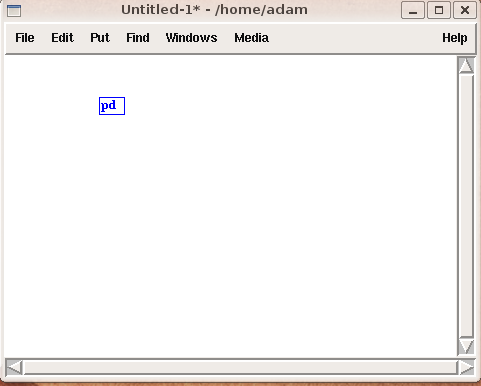
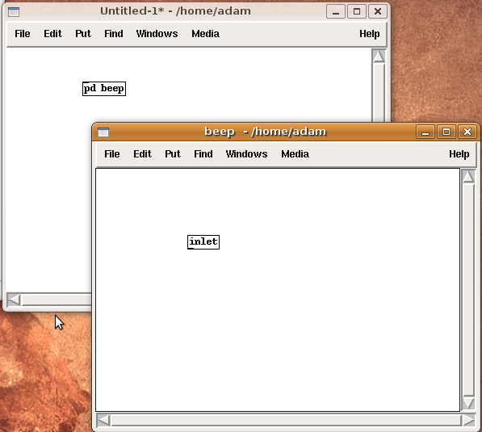

Subpatches
With more complex coding, patches can become large and difficult to manage. Subpatches help resolve this problem.
It is useful to think of subpatches as container or drawers, where code is organized and stored. A subpatch is created by typing "pd" into an object box followed by any an arbitrary word. When creating a subpatch like this, a new empty subpatch window will appear and you can put code in this window.


Subpatch Inlets and Outlets
Subpatches can have inlets and outlets. These are created by using the inlet and outlet objects (and inlet~ or outlet~ for audio signals).

When you create inlets and outlets note that the origial subpatch object also gains inlets and outlets.

Closing and Reusing Subpatches
When closing subpatch windows the code is not lost but still exists and works. Subpatch windows can be reopened by left-clicking on subpatch objects or by right-clicking and choosing "Open" from menu.
Subpatch objects can be freely copied and each copy can be individually edited - changes are not reflected in any other subpatches, even if they have the same name.